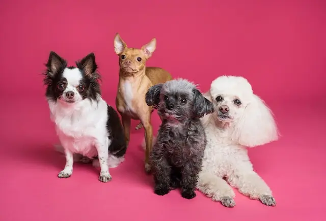
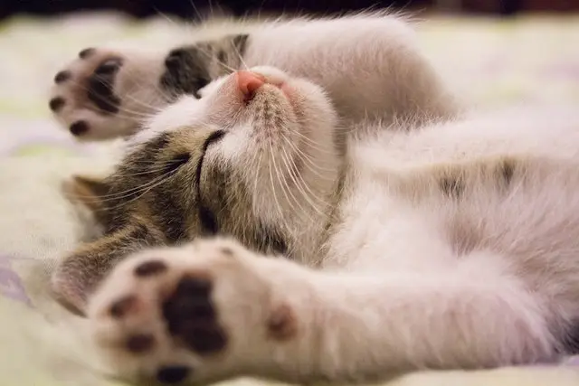

Buena medicina más un excelente servicio para ti y tu mascota son nuestras premisas de una buena atención a nuestros clientes.
Pet-Master es un nuevo concepto en atención médica veterinaria. Nuestra misión es hacer que tú y tu mascota tengan una relación: feliz, responsable y duradera.
